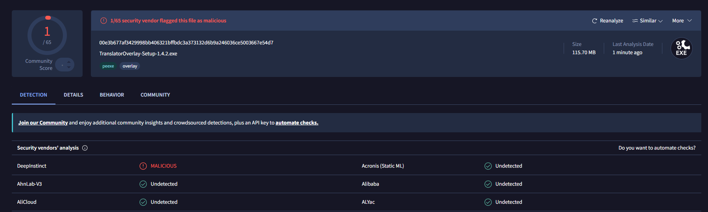

Translate any text on your screen with one hotkey
Select a game chat, a stream or a program without a translation, and read the result in a popup right next to it. Works without an API key, or fully offline.
Free and open source. Installs without administrator rights.
A screen translator built for game chat
Press the hotkey, drag over any text, read the translation. The popup appears next to the text you selected.

lf2m is expanded, not left as it is.

- One hotkeyPress Ctrl+Shift+R and select a region. Save regions with their own hotkeys.
- Live modeRe-translates a region when its text changes, which suits stream chats.
- OCR on your PCText is recognised locally, on any DirectX 12 GPU or the CPU. Latin and Cyrillic scripts.
- Game chat glossaryThe local model is tuned for game chat and knows terms like
wts,lf2mandgg. - History and read-aloudTranslation history, text-to-speech, and an interface in English and Russian.
- Automatic updatesThe app checks GitHub for a new release and installs it after a SHA-256 check.
Install in 3 steps
- DownloadGet
TranslatorOverlay-Setup-<version>.exefrom the download page and run it. No administrator rights needed. - Pick a modeThe first-run wizard offers online without a key, an LLM with your key, or offline, which downloads the local model.
- Press Ctrl+Shift+RDrag over any text. Settings open with Ctrl+Shift+O.
Windows 10 or 11, 64-bit. Installation guide, including running from source.
Translation modes
Pick the backend that fits. The hotkey, OCR and popup work the same with every one of them.
| Mode | Key needed | Offline | Good for |
|---|---|---|---|
| Google Translate (default) | No | No | Everyday use, many languages |
| DeepL / Azure Translator | Your key | No | When you already use DeepL or Azure (both have free tiers) |
| LLM: OpenRouter (free models) or Anthropic | Your key | No | Context-aware translation with domain profiles, streaming output |
| Local NLLB-200 model | No | Yes | Privacy, no internet, game-chat slang; about 1 s per line on a CPU, faster on an NVIDIA GPU |
How the pipeline works: hotkey, screenshot in memory, OCR, cache, translation, popup.
Privacy: what stays on your computer
- With a cloud backend the recognised text goes to that provider (Google, DeepL, Azure, OpenRouter or Anthropic). Free OpenRouter models may log prompts, so do not translate passwords that way.
- The local model never touches the network. Screen capture, OCR and translation all stay on your computer.
- Screenshots are never saved. The text is never written to the logs, only its length. The history keeps your last 500 translations and can be cleared.
- No telemetry and no account. API keys are stored in Windows Credential Manager.
- On start the app asks GitHub for the latest release; nothing about you or your texts is sent.
Safety: VirusTotal scan
Every release installer is scanned on VirusTotal. This is the scan of TranslatorOverlay-Setup-1.4.2.exe.

- One engine out of 65 is a typical false positive for an unsigned installer of a program that installs a global keyboard hook, which is how the hotkeys work anywhere.
- Check the file yourself. Compare the SHA-256 of the downloaded installer with the one in the release notes, and upload the file to VirusTotal if you want your own scan.
- The source code is open. You can read it, or run the app from source instead of the installer.
SHA-256 of the 1.4.2 installer: 00e3b677af3429998bb406321bffbdc3a373132d6b9a246036ce5003667e54d7. Open the full report on VirusTotal.
FAQ
Windows SmartScreen or my antivirus warns about the installer
The installer is not code-signed yet, so SmartScreen shows "Windows protected your PC" for a new release. Check the file's SHA-256 against the one in the release notes, then choose More info → Run anyway. Some antivirus programs also flag the app because it installs a global keyboard hook, which is how the hotkeys work anywhere.
The hotkey does nothing in a game running as administrator
Windows does not pass keystrokes from a program running as Administrator to programs with normal rights. Start Translator Overlay as Administrator too, only for those games: right-click the shortcut, then Run as administrator. If the hotkey does nothing anywhere, another program probably took the same combination; pick another one in Settings → Hotkeys.
I have no GPU. Will it work?
Yes. A GPU is only a speed-up. OCR falls back to the CPU by itself (about 0.5–1.5 s per screenshot), cloud backends do not use a GPU at all, and the local model runs on the CPU at about 1 s per chat line on a modern 4-core CPU. An NVIDIA GPU with CUDA 12 makes the local model about 3 times faster.
Can it work fully offline?
Yes, with the local NLLB backend. Two one-time downloads are needed while online: the OCR recognition model (about 8 MB, on first launch) and a model build (about 620 MB, from Settings). After that, translation needs no network.
Does it work on Linux or macOS?
No. Global hotkeys, key storage and the installer are Windows-specific. OCR reads Latin and Cyrillic scripts only.